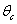
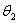
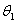
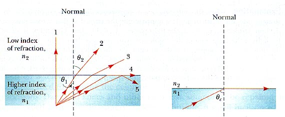
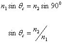
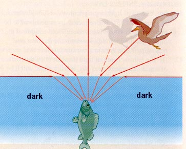
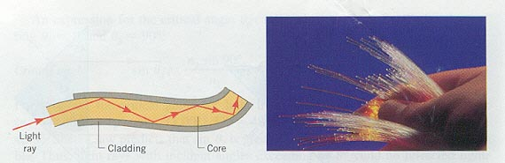

Total Internal Reflection

"One machine can do the work of fifty
ordinary men. No machine can do the work of one
extraordinary man"
Elbert Hubbard

- When light passes from a medium with refractive index n1
to a medium with refractive index n2, where n 1
> n2, if the incident angle is greater than some
critical angle , the light will undergo
total internal reflection (TIR).
- The diagram below represents a light source underwater with
light rays striking the water-air interface. Rays 1, 2 and
3 are refracted at the interface according to Snell's law, the
refracted ray bending away from the normal such that  >  . When = 90o
the refracted ray is directed along the surface of the water and
is called the critical angle . For incident angles greater than
there is no refracted ray, the light
undergoes total internal reflection back into the water.
 Note that even when TIR does not take
place there will always be a reflected wave (back into the water),
in this case, of low intensity (about 4% of the total energy is
reflected). In other words, at an interface where the
incident angle is less than the critical angle, part of the
incident energy is transmitted and part is reflected.
Note that even when TIR does not take
place there will always be a reflected wave (back into the water),
in this case, of low intensity (about 4% of the total energy is
reflected). In other words, at an interface where the
incident angle is less than the critical angle, part of the
incident energy is transmitted and part is reflected.
 Even though all the light energy undergoes
total internal reflection, there is a "disturbance" in the other
medium (air in the example above) called the evanescent wave which
travels along the interface between the two media...
Even though all the light energy undergoes
total internal reflection, there is a "disturbance" in the other
medium (air in the example above) called the evanescent wave which
travels along the interface between the two media...

- At the critical angle

For light passing into air from water the critical angle
is equal to about 49o.
- Thus a fish-eye's view is of the world in a 98o
cone. Outside this cone all is darkness...[Actually this
is not true due to the scattering of light in water]

- Total Internal Reflection is the mechanism by which fibre
optic cables work. Signal losses along such cables is
extremely small since ALL the incident energy is
reflected.

"I know that this defies the law of gravity,
but, you see, I never studied law."
Bugs Bunny
Dr. C. L. Davis
Physics Department
University of Louisville
email: c.l.davis@louisville.edu